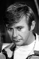

Country:United States, 87 minutes
Spoken languages:
Genres:Horror, Mystery, Thriller
Director(s):Joseph Mazzuca
Writer(s):Peter Arnold, Elwyn Richards
Video Codec:Unknown
Number: 1358


Certification:PG
Storyline:
During an all-girl secret society initiation, one of the new members is killed playing Russian Roulette. Many years later the survivors are invited for a reunion to a lavish estate, which turns out to be owned by the crazed father of the girl who died.
Cast: 


Medium: Original DVD,
Comments: Part of: Witches & Demons Collection
Loaned: No
Aspect ratio: Unknown